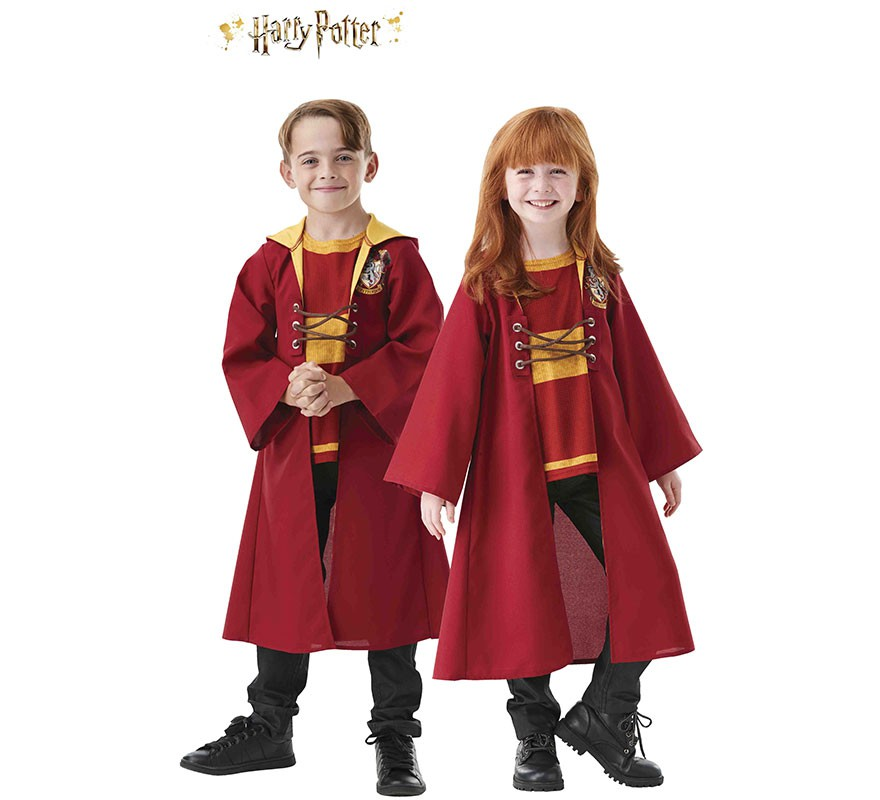

I nostri prodotti


| Nome | Immagine | Descrizione | Prezzo per giornata | Seleziona | Modello |
| Nimbus 2000 | |
Nimbus 2000 80 galeoni (acquisto) La Nimbus 2000 è una scopa da corsa prodotta nel 1991 dalla ditta di Devlin Whitehorn, la Compagnia Scope da Corsa Nimbus. Nel momento in cui fu messa sul mercato, la Nimbus 2000 era la più veloce scopa esistente e ha regnato indisturbata sui campi di Quidditch fino a quando non è stata surclassata dalla Nimbus 2001. Ha un manico sottile di mogano. La Nimbus 2000 è molto resistente e ha un’aerodinamica eccellente. Veloce e scattante, è adatta per acrobazie aeree come gli avvitamenti o il giro della morte. Il suo punto di forza è la coda, costituita da rami perfettamente dritti e levigati che mantengono stabile l’assetto. Pur non trattandosi di un modello recente, la Nimbus 2000 viene ancora utilizzata nelle competizioni. | 20 Galeoni | ||
| Nimbus 2001 | |
Nimbus 2001 95 galeoni (acquisto) Un nuovo modello della Nimbus, nato con lo scopo di rimpiazzare quello precedente, non si è dimostrato all’altezza delle aspettative. Anche se in accelerazione riesce a superare le prestazioni della Nimbus 2000, presenta alcuni difetti che con l’usura ne compromettono la velocità. Sulla parte posteriore è presente un solco. I progettisti lo hanno realizzato per migliorare l’assetto di volo. In accelerazione la coda della scopa, se non è ben bilanciata, potrebbe impennarsi, ma grazie alla scanalatura mantiene sempre in posizione ottimale. Con l’andar del tempo però questo manico presenta un difetto: l’incisione sulla coda inizia a fare attrito e la velocità di punta cala sensibilmente. | 24 Galeoni | ||
| Firebolt | |
Firebolt 120 galeoni (acquisto) Questa scopa da corsa all’avanguardia, prodotta nel 1993, è fornita di un raffinato, aerodinamico manico di frassino, trattato con vernice adamantina e numerato a mano. I ramoscelli di betulla che formano la coda, selezionati uno per uno, sono stati sfrondati e lavorati fino a raggiungere un perfetto design per offrire alla Firebolt un inguagliabile equilibrio e una precisione millimetrica. La Firebolt ha un'accelerazione da 0 a 250 km orari in dieci secondi e venne usata dalle squadre nazionali alla Coppa del Mondo di Quidditch del 1994. | 30 Galeoni | ||
| Freccia d'Argento | Freccia d’argento 20 galeoni (acquisto) La Freccia d'Argento (ing: Silver Arrow) fu la prima vera scopa da corsa, prodotta da Leonard Jewkes. Può fare fino a settanta miglia all'ora col vento in coda. | 5 Galeoni | |||
| Stellafreccia | |
Stellasfreccia 50 galeoni (acquisto) La Stellasfreccia (ing: Shooting Star) fu la prima scopa prodotta dalla Scope Universal Ltd. Inizialmente nel 1955 sembrava molto buona ma successivamente si scoprì che, invecchiando, perdeva velocità e quota. | 12,5 Galeoni | ||
| Oakshaft 79 | Oakshaft 79 15 galeoni (acquisto) La Oakshaft 79 è una scopa con manico in legno di quercia inventata nel 1879 da Elias Grimstone, progettata per lunghi voli e per sostenere i venti d’alta quota. A causa della sua grandezza, non era molto adatta per il Quidditch. | 4 Galeoni | |||
| Boccino d'Oro | |
Il Boccino è piccolo, dorato e dotato di ali. Vola intorno al campo di Quidditch ad altissima velocità, a volte arrestandosi di colpo. Può inoltre cambiare direzione istantaneamente grazie alle articolazioni rotanti delle ali. È stregato per rimanere entro i confini del campo. I Boccini hanno una memoria tattile e ricordano chi è la prima persona che li ha toccati, in caso di disputa sul risultato. | 15 galeoni | ||
| Bolide | |
Il Bolide è una delle palle usate nel Quidditch. È fatta di ferro ed è stregata per inseguire indiscriminatamente i giocatori di Quidditch. Il compito dei Battitori è di colpire i due Bolidi usati nella partita con delle mazze, in modo di proteggere i propri compagni di squadra e colpire invece gli avversari. | 10 Galeoni | ||
| Pluffa | È una palla rossa o blu di cuoio. Ha un diametro di circa dodici pollici. Costituisce il centro del gioco. I tre Cacciatori si passano la Pluffa e cercano con essa di fare goal negli anelli delle porte avversarie. | 15 Galeoni | |||
| Set Completo | Il Set dispone di tutti gli strumenti necessari per la partita di Quidditch: un boccino d'oro, due bolidi, una pluffa. è possibile scegliere il colore del set, sono disponibili il cofanetto rosso e il cofanetto blu. Le scope e le mazze sono a parte. | 40 Galeoni | |||
| Divisa Grifondoro Adulto | Divsa originale della casata Grifondoro, per tutti i maghi che ne fanno parte o per i sostenitori della squadra. Tutte le nostre divise sono realizzate con materiali particolarmente resistenti e di alta qualità, per poterne garantire la disponibilità nel tempo. | 15 Galeoni | |||
| Divisa Grifondoro Bambino |  | Divisa Originale Grifondoro per i piccoli maghi. Tutte le nostre divise sono realizzate con materiali particolarmente resistenti e di alta qualità, per poterne garantire la disponibilità nel tempo. | 10 Galeoni | <||
| Divisa Serpeverde Adulto | Divsa originale per tutti quei maghi che sostengono o fanno parte della casata Serpeverde. Tutte le nostre divise sono realizzate con materiali particolarmente resistenti e di alta qualità, per poterne garantire la disponibilità nel tempo. | 15 Galeoni | |||
| Divisa Serpeverde Bambino | Divisa Originale per i piccoli maghi Serpeverde. Tutte le nostre divise sono realizzate con materiali particolarmente resistenti e di alta qualità, per poterne garantire la disponibilità nel tempo. | 10 Galeoni | |||
| Ginocchiere e parastinchi | Protezioni per le ginocchia e gli stinchi realizzate in pelle di Panciasquamato ucraino. | 3 Galeoni | |||
| Casco e occhiali | Protezioni per gli occhi e la testa ergonomiche, le migliori in circolazione. Come tutti i nostri prodotti vengono igenizzati tra un cliente e l'altro, ma questi due prodotti con maggiore cura. | 5 Galeoni | |||
| Porte trasportabili | Comode porte che ti permettono di giocare a Quidditch dove e quando vuoi. Costruite per rendere il montaggio e il trasporto semplice e veloce, telaio estremamente leggero ma resistente. | 10 Galeoni |